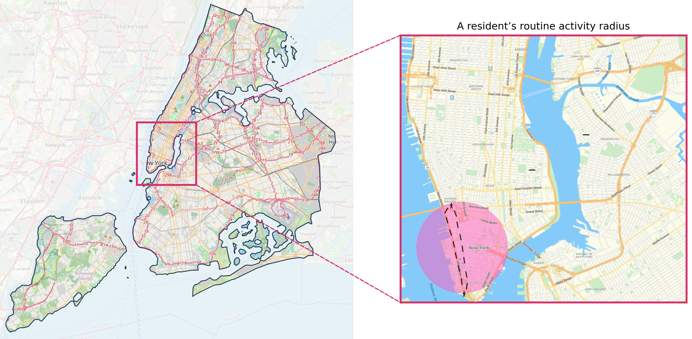
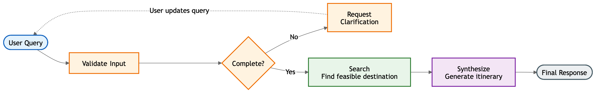
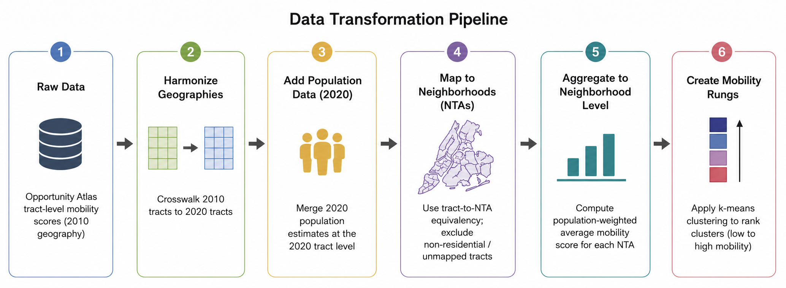
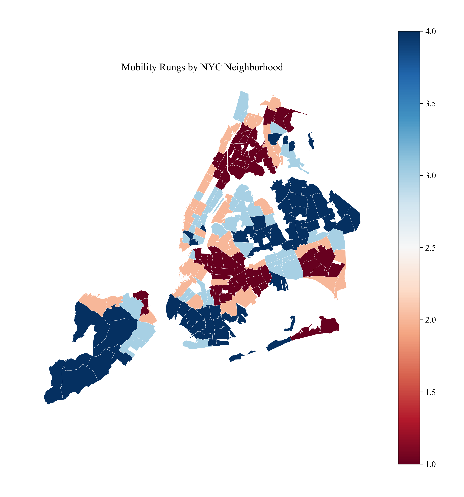
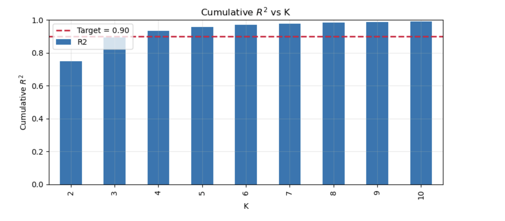
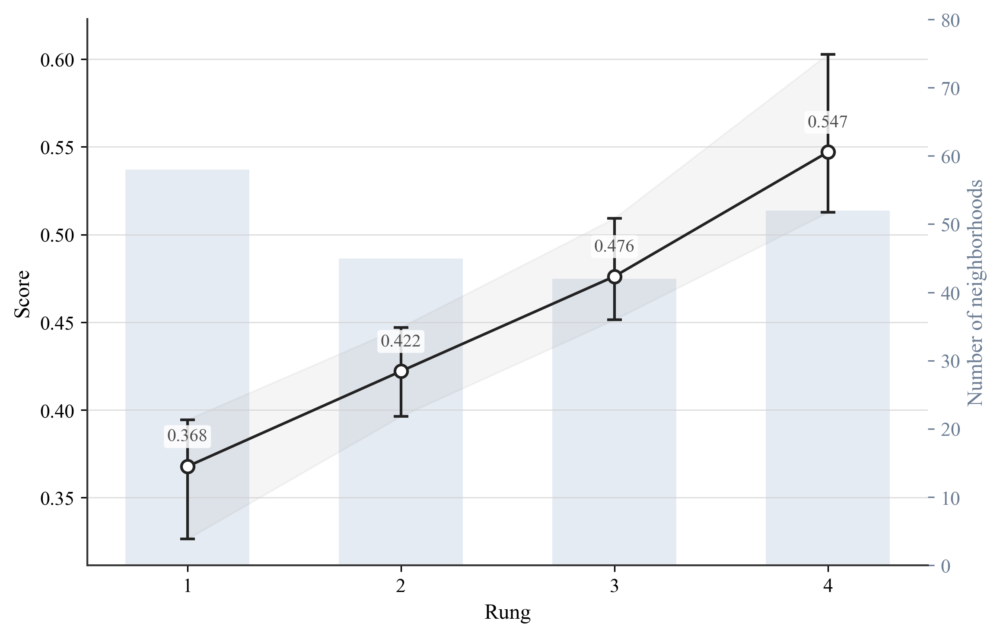
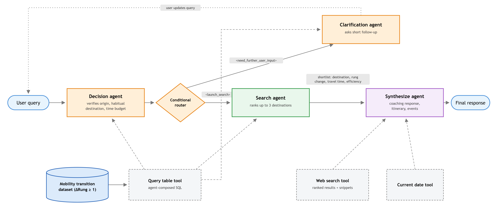

Bridging NYC: An Agentic Prototype for Navigating the Opportunity Landscape
Abstract
Researchers study bridging networks to understand how stories, behaviors, and opportunities flow between communities.1 Given a user's origin neighborhood and travel-time constraint, the prototype discussed below uses LLM-based agents equipped with a dedicated knowledge base and web search capabilities to generate itineraries in neighborhoods associated with stronger upward mobility outcomes. While the prototype does not evaluate whether such recommendations produce durable bridging ties, it offers a proof of concept for how agentic systems may reduce friction in intercommunity connection.
Introduction
Urban residents often move along repeated paths shaped by work, errands, and familiar social routines, resulting in sustained contact with only a limited set of places and communities. Consequently, residents' everyday routines may create relatively few social bridges linking their home neighborhood to other neighborhoods.2 Work by Sampson and Levy suggests that such neighborhood isolation is associated with worse outcomes and fewer pathways to opportunity.3

In contrast, communities whose residents maintain ties across diverse social and geographic boundaries gain broader access to information, resources, and opportunities, an effect found to be a powerful driver of wealth creation.4 This dynamic also operates at the individual level. When individuals spend time in places outside their usual routines, they encounter new ideas, practices, and social contexts that are less available within bounded local networks.5 Building on this motivation, this project focuses on a narrow intervention point: reducing the search costs, uncertainty, and planning burden of reaching higher-mobility neighborhoods, where socially integrated contact is more likely to occur.
Methods
The prototype follows a two-step search-and-synthesize process: a search agent identifies candidate destination neighborhoods from the knowledge base, and a synthesis agent translates the selection into a concrete itinerary. Both agents are described in detail below.
Agent Architecture
Each person has limited time and energy for relationships. They must divide their efforts between strengthening internal community ties, or bonding capital, and creating outward connections, or bridging capital.6 Prior research on social capital suggests that the most effective bridging connections are not to the wealthiest or most distant communities, but to communities just one step better off than one's own. To put it simply, the most useful connections are to communities that are one rung higher on the socioeconomic ladder.7
First, the Search Agent queries the knowledge base for precomputed relationships between neighborhoods, favoring destinations with stronger upward mobility outcomes, specifically neighborhoods exactly one rung higher, that remain feasible within the user's limited time budget for travel on a given day. If multiple options remain, it selects the destination offering the greatest mobility benefit relative to travel time. When these criteria cannot all be satisfied, such as when no one-rung-higher destination falls within the user's time budget, the Search Agent prioritizes an appropriate mobility step and travel feasibility over strict optimization of mobility gain.
The Synthesize Agent translates the Search Agent's destination selection into a concrete, actionable itinerary, using real-time web search to identify specific venues, such as museums, exhibits, science museums, convention centers, theme parks, coffee shops, and cafes, and prioritizing time-sensitive events when available.
These venue categories are not arbitrary. Segregation between communities arises not only from where people live, but from everyday cultural patterns in where people work, shop, and play, meaning the category of venue visited, not just its neighborhood location, shapes who encounters whom. Empirical work supports this: museums and exhibits rank among the most income-integrated venue types in American cities, and individuals with high "place exploration," a tendency to visit new locations rather than routine ones, are disproportionately drawn to exhibits, theaters, and cafes.8 The Synthesize Agent's venue categories align with both findings, favoring place types that are less income-segregated and behaviorally associated with exploratory, rather than routine, mobility patterns.

Together, the two agents are complementary. The Search Agent targets geographic and economic opportunity, while the Synthesize Agent targets the cultural, activity-based dimension. Rather than presenting a single static recommendation, the Synthesize Agent frames each destination as part of a gradual process of breaking routine, using motivational language to explain why the trip is worthwhile.
Dataset
The agents' knowledge base consists of 197 New York City Neighborhood Tabulation Areas (NTAs), each assigned a mobility rung derived from Census tract–level data in the Opportunity Atlas study of intergenerational income mobility, through a multi-stage data transformation pipeline.9

Each neighborhood belongs to exactly one rung, and the resulting origin-destination dataset pairs every origin neighborhood with every other neighborhood as a potential destination, recording each pair's mobility rungs, estimated subway travel time, and derived "mobility-gain" metrics that capture the magnitude of social mobility change associated with a given trip.

Discussion
Research shows bridging networks can predict various outcomes such as financial growth and child development, suggesting that conventional factors like investment, education, and infrastructure may not directly cause improvement. Instead, these factors may matter because they either help or hurt individuals build diverse networks, identify new opportunities, and act on them.10 Rather than using AI for systemic design, this project is intended to be a tool for the individual to act on opportunities with reduced friction.
Limitations
The primary limitations of this approach lie in its underlying infrastructure: the dataset and the web itself. The dataset is anchored to Opportunity Atlas social mobility scores, a static snapshot that may not reflect current neighborhood realities. The web, as the system's source for events, introduces a digital bias: venues and institutions with stronger online presence are more likely to surface in search results, while informal community activity, which may be equally or more valuable to community life, remains underrepresented.
Future Work
Consequently, a promising direction for this prototype is to further enrich its knowledge base. Incorporating additional top-down neighborhood metrics, such as schools, workforce programs, and housing affordability, could enable recommendations to be tailored to different forms of user aspiration, such as education, employment, or family life. From a bottom-up lens, incorporating data referred to as "stories for ourselves" would provide insights that reflect community context and values.11
Personalization represents a related opportunity: incorporating a user's place-exploration history. The prototype currently lacks persistent memory, so each conversation begins independently unless a user re-shares that information themselves. With memory of where a user has already visited, recommendations could improve progressively over time. This same data would also support evaluation of the system's effectiveness, revealing whether users who receive itinerary recommendations actually travel to the suggested neighborhoods, and if so, whether repeat visits occur over time, reflecting the sustained contact associated with durable bridging ties.
Implications
Although this prototype was built for New York City, its underlying data pipeline is not city-specific by design. Constructed from Census tract–level Opportunity Atlas data, the data transformation pipeline could be adapted to other U.S. cities or regions by filtering to different tract codes and incorporating a region-specific transit network, without requiring a redesign of the core methodology. This suggests the approach could be of use to city agencies seeking data-informed tools to support public services.
Ethical Considerations
This work raises several ethical considerations. Ranking neighborhoods along a mobility ladder risks flattening community value into a single metric. Neighborhoods assigned low rungs could be stigmatized as places to leave rather than places with assets.
Additionally, the intended directionality of benefit matters critically. This system is designed to build the user's social capital, not to extract value from destination neighborhoods. However, this distinction would need to be reinforced carefully in any real-world deployment.
Conclusion
This project developed a prototype agentic system that grounds large language models in structured socioeconomic and transit data, generating itineraries to New York City neighborhoods with higher social mobility and discovering venues in real time. This prototype does not claim to build durable bridging ties, transform neighborhood mobility patterns, or address the structural inequities that limit opportunity access.
What it offers instead is a reframing of AI in service of social connection and economic mobility. Rather than asking how AI can redesign cities to improve bridging networks, this work asks how technology can serve as social infrastructure at the individual level. Not as concrete and transit systems, but as the tools and knowledge that enable individuals to build their own social capital by navigating existing opportunity landscapes more effectively. The challenge ahead is determining when such systems merely enable movement and when they meaningfully support the repeated, situated interactions from which bridging ties grow.
Appendix
Computational Environment
All data processing was performed in Python 3 using pandas and NumPy for tabular operations, GeoPandas and Shapely for spatial operations, NetworkX for graph construction and shortest-path computation, scikit-learn for K-means clustering, and requests for API retrieval. Figures were produced with Matplotlib, Seaborn, and Folium. Census population counts were retrieved programmatically from the U.S. Census Bureau API; NTA boundaries were retrieved from the NYC Department of City Planning ArcGIS Feature Service.
Data Sources and Transformations
The agent's knowledge base integrates publicly available data. Datasets were combined through a multi-stage processing pipeline to produce neighborhood-level opportunity estimates and transit accessibility measures for 197 Neighborhood Tabulation Areas (NTAs) in New York City. Table A1 summarizes the data sources used in constructing the knowledge base.
| Source | Dataset | Vintage | Role in pipeline |
|---|---|---|---|
| Opportunity Insights | Opportunity Atlas (kfr_pooled_p25) | 2010 tracts | Tract-level social mobility estimates |
| HUD | Census Tract Crosswalk | 2010–2020 | Harmonization of 2010 estimates to 2020 tracts |
| U.S. Census Bureau | PL 94-171 Redistricting Data (P1_001N) | 2020 | Population weights; exclusion of non-residential tracts |
| NYC Dept. of City Planning | NTA boundaries; tract-to-NTA equivalency | 2020 | Neighborhood aggregation geography |
| MTA | Subway GTFS feed | 2026 | Transit graph and travel-time estimation |
Opportunity Atlas
Social mobility is operationalized using the Opportunity Atlas measure kfr_pooled_p25, which estimates the household income rank in adulthood (25th percentile) for children raised in low-income households, pooled across genders and races. Higher values indicate greater levels of intergenerational upward economic mobility. Census tract identifiers (GEOID) were retained as the unique geographic identifier throughout the initial stages of data processing.
Census Tract Crosswalk
The Opportunity Atlas reported using 2010 Census tract boundaries, so 2020 tract-level mobility estimates were harmonized using the 2010–2020 Census Tract Crosswalk published by the U.S. Department of Housing and Urban Development (HUD). Three variables from the crosswalk were used during this transformation: GEOID_2010, GEOID_2020, and RES_RATIO.
The residential allocation ratio (RES_RATIO) represents the proportion of a 2010 tract's residential population reassigned to each corresponding 2020 tract. These weights were used to translate mobility scores from 2010 Census tracts into 2020 Census tracts:
\[ Score_{20,j} = \frac{\sum_{i \in I(j)} \left( RES\_RATIO_{ij} \times Score_{10,i} \right)}{\sum_{i \in I(j)} RES\_RATIO_{ij}} \]
where \(Score_{20,j}\) is the harmonized mobility estimate for 2020 Census tract \(j\); \(Score_{10,i}\) is the Opportunity Atlas mobility estimate for 2010 Census tract \(i\); \(RES\_RATIO_{ij}\) is the proportion of the residential population from 2010 tract \(i\) reassigned to 2020 tract \(j\); and \(I(j)\) is the set of 2010 tracts overlapping 2020 tract \(j\).
2020 Decennial Census Population
Population counts were obtained from the 2020 Decennial Census Public Law 94-171 (PL 94-171) Redistricting Data through the U.S. Census Bureau API. Total population (P1_001N) was retrieved for every census tract within the five boroughs of New York City including the Bronx, Brooklyn, Manhattan, Queens, and Staten Island.
Population estimates served two purposes. First, census tracts with non-positive population were excluded from further analysis because they do not represent residential neighborhoods. Second, tract populations were used as weights when aggregating tract-level mobility estimates to neighborhood-level measures, explained below.
Neighborhood Tabulation Areas
Neighborhood-level analyses were conducted using 2020 Neighborhood Tabulation Areas (NTAs) developed by the New York City Department of City Planning. For each NTA, the neighborhood social mobility score was calculated as a population-weighted average of the constituent Census tracts:
\[ Score_{NTA,k} = \frac{\sum_{j \in J(k)} \left( P_j \times Score_{20,j} \right)}{\sum_{j \in J(k)} P_j} \]
where \(Score_{NTA,k}\) is the population-weighted mobility score for NTA \(k\); \(Score_{20,j}\) is the harmonized mobility estimate for 2020 Census tract \(j\); \(P_j\) is the 2020 Census population count for tract \(j\) (P1_001N); and \(J(k)\) is the set of 2020 tracts assigned to NTA \(k\).
Defining Mobility Rungs
Scores are translated into discrete tiers, or "rungs," using K-means clustering. Resulting clusters are then ranked from lowest to highest average social mobility score to form a ladder.
The number of mobility rungs was selected empirically. For each candidate value of K, the within-cluster sum of squares was calculated:
\[ W_K = \sum_{k=1}^{K} \sum_{x_i \in C_k} \left( x_i - \mu_k \right)^2 \]
where \(C_k\) represents cluster \(k\), \(x_i\) represents the mobility score of NTA \(i\), and \(\mu_k\) represents the centroid of cluster \(k\).
The explained variance of each clustering solution was calculated:
\[ R^2 = 1 - \frac{W_K}{W_1} \]
where \(W_1\) represents the total variance of the unclustered mobility scores around the overall mean.
The final number of mobility rungs was selected as the smallest number of clusters that explained at least 90% of total variance in neighborhood mobility scores. The 4 resulting rungs contained 58, 45, 42, and 52 neighborhoods, ordered from lowest to highest mobility.

Clusters were ordered according to their centroid values to create an interpretable mobility ladder. Cluster centroids were sorted from lowest to highest social mobility score, and clusters were assigned sequential rung values where Rung 1 represents the cluster with the lowest average social mobility score and Rung 4 represents the cluster with the highest average social mobility score.

Metropolitan Transportation Authority GTFS Feed
Subway network data was obtained from the Metropolitan Transportation Authority (MTA) General Transit Feed Specification (GTFS). Three GTFS files were used to reconstruct scheduled subway service:
stops.txt, containing station identifiers, names, geographic coordinates, and parent-station relationships;trips.txt, identifying scheduled train trips, routes, and service patterns;stop_times.txt, containing the ordered sequence of station stops together with scheduled arrival and departure times for every trip.
These files were used to reconstruct the subway network as a weighted directed graph for estimating scheduled travel times between neighborhoods, where nodes represent GTFS stop identifiers (platforms) and edges represent scheduled travel segments between consecutive stops.
To associate subway stops with neighborhoods, the official 2020 Neighborhood Tabulation Area polygon geometries were used to represent neighborhood boundaries spatially.
For each origin Neighborhood Tabulation Area (NTA), a temporary source node was added to the graph and connected to all available subway stops associated with that neighborhood. This approach allowed each neighborhood to enter the subway network through multiple potential access points.

Additional derived variables were included to characterize potential neighborhood transitions, including mobility score differences, rung changes, and ranking indicators used to evaluate destination alternatives:
\[ \Delta Rung_{ij} = Rung_j - Rung_i \]
where \(Rung_i\) and \(Rung_j\) represent the mobility rungs of the origin and destination neighborhoods, respectively. Positive values indicate that the destination neighborhood has a higher mobility classification than the origin neighborhood.
For the agent's knowledge base, the dataset was filtered to retain only upward mobility transitions, defined as destination neighborhoods with a mobility rung at least one level higher than the origin neighborhood.
The full construction pipeline described in this appendix is implemented in a single Jupyter notebook (bridging_networks.ipynb), available in the project repository, which reproduces the knowledge base end to end.
Agent Construction
The multi-agent workflow is implemented in Langflow, an open-source visual orchestration framework for LLM applications. The workflow consists of four LLM agents arranged in a routed pipeline: an intake agent that determines whether the user's request is sufficiently specified, a clarification agent that elicits missing information, a search agent that ranks candidate destinations against the knowledge base, and a synthesize agent that translates ranked destinations into a coaching-oriented response with concrete activity suggestions.

All external capabilities are accessed through Model Context Protocol (MCP) tools: a tabular query tool over the agent knowledge base, a web search tool, and a current-date tool. System prompts are reproduced verbatim in PROMPTS.MD; however, the three MCP tools used in this work are served by a proprietary internal platform and are not distributed. Readers wishing to reproduce the system must compose equivalent tool integrations independently and supply their own model configuration and API credentials.
Notes
- Xiaowen Dong et al., "Social Bridges in Urban Purchase Behavior," ACM Transactions on Intelligent Systems and Technology 9, no. 3 (2017): 1–29, https://dl.acm.org/doi/10.1145/3149409. ↩
- Robert J. Sampson et al., "Neighborhoods and Violent Crime: A Multilevel Study of Collective Efficacy," Science 277, no. 5328 (1997): 918–924, https://www.science.org/doi/10.1126/science.277.5328.918; Shi Kai Chong et al., "Economic Outcomes Predicted by Diversity in Cities," EPJ Data Science 9, no. 17 (2020), https://doi.org/10.1140/epjds/s13688-020-00234-x. ↩
- Robert J. Sampson and Brian L. Levy, "The Enduring Neighborhood Effect, Everyday Urban Mobility, and Violence in Chicago," University of Chicago Law Review 89, no. 2 (2022): 323–347, https://www.jstor.org/stable/27131333. ↩
- Shi Kai Chong et al., "Economic Outcomes Predicted by Diversity in Cities," EPJ Data Science 9, no. 17 (2020), https://doi.org/10.1140/epjds/s13688-020-00234-x. ↩
- Alex Pentland, Shared Wisdom: Cultural Evolution in the Age of AI (Cambridge, MA: MIT Press, 2025), 39. ↩
- Pentland, Shared Wisdom, 48. ↩
- Raj Chetty et al., "Social Capital I: Measurement and Associations with Economic Mobility," Nature 608, no. 7921 (2022): 108–121, https://doi.org/10.1038/s41586-022-04996-4; Raj Chetty et al., "Social Capital II: Determinants of Economic Connectedness," Nature 608, no. 7921 (2022): 122–134, https://doi.org/10.1038/s41586-022-04997-3. ↩
- Esteban Moro et al., "Mobility Patterns Are Associated with Experienced Income Segregation in Large US Cities," Nature Communications 12, no. 4633 (2021), https://doi.org/10.1038/s41467-021-24899-8. ↩
- Raj Chetty et al., "The Opportunity Atlas: Mapping the Childhood Roots of Social Mobility," NBER Working Paper 25147 (2018), https://doi.org/10.3386/w25147; data accessed via "Neighborhoods Matter," Opportunity Insights, accessed March 3, 2026, https://opportunityinsights.org/neighborhoods/. ↩
- Pentland, Shared Wisdom, 45. ↩
- Pentland, Shared Wisdom, 52. ↩
Supplementary Materials
Repository
All project code, data imports, exports, and documentation are made public.
Datasets
The raw datasets used to construct the agent knowledge base, with the processing notebook (bridging_networks.ipynb) that reproduces the pipeline end to end.
Metropolitan Transportation Authority. "New York City Subway General Transit Feed Specification (GTFS)." Accessed March 2026. http://web.mta.info/developers/data/nyct/subway/google_transit.zip.
New York City Department of City Planning. "2020 Census Tracts to 2020 Neighborhood Tabulation Areas and Community District Tabulation Areas Equivalency File." 2020. Accessed March 2026. https://data.cityofnewyork.us/.
New York City Department of City Planning. "2020 Neighborhood Tabulation Areas (NTA) Boundaries." ArcGIS Feature Service. 2020. Accessed March 2026. https://services5.arcgis.com/.../FeatureServer.
Opportunity Insights. "Opportunity Atlas." 2022. Accessed March 3, 2026. https://www.opportunityatlas.org.
U.S. Census Bureau. "2020 Decennial Census Redistricting Data (Public Law 94-171)." 2020. Accessed March 2026. https://api.census.gov/data/2020/dec/pl.
U.S. Department of Housing and Urban Development. "2010–2020 Census Tract Crosswalk Files." 2024. Accessed March 2026. https://www.huduser.gov/portal/datasets/census_tract_crosswalk.html.